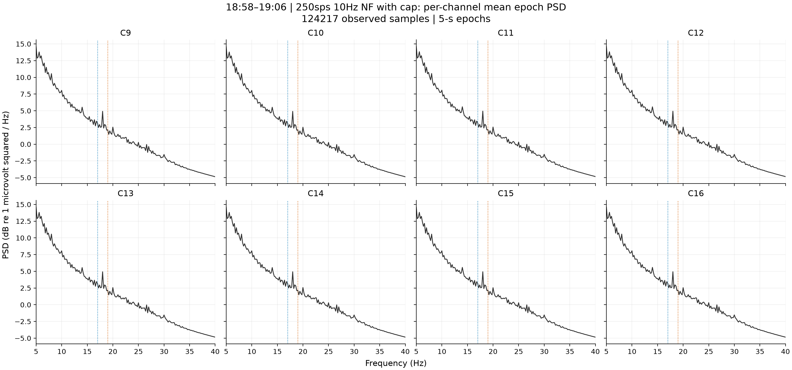
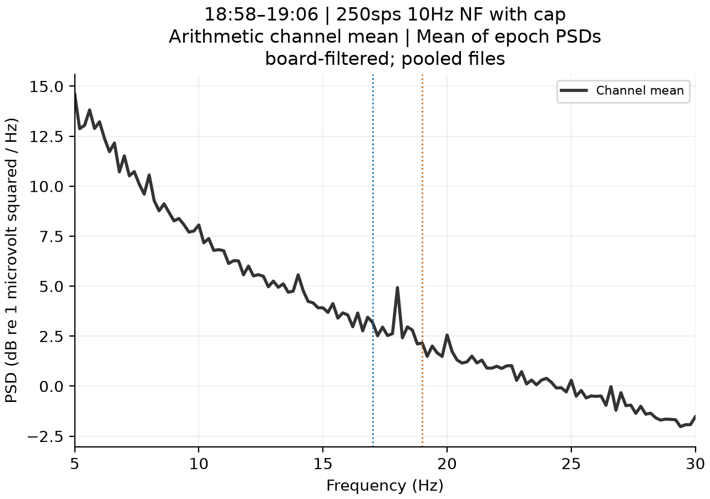
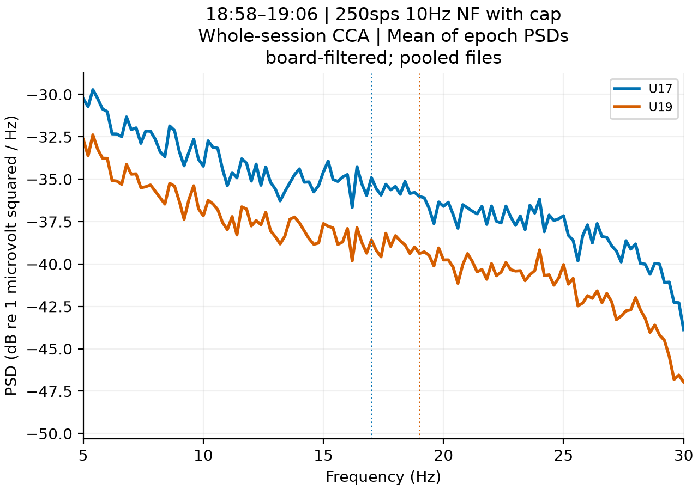
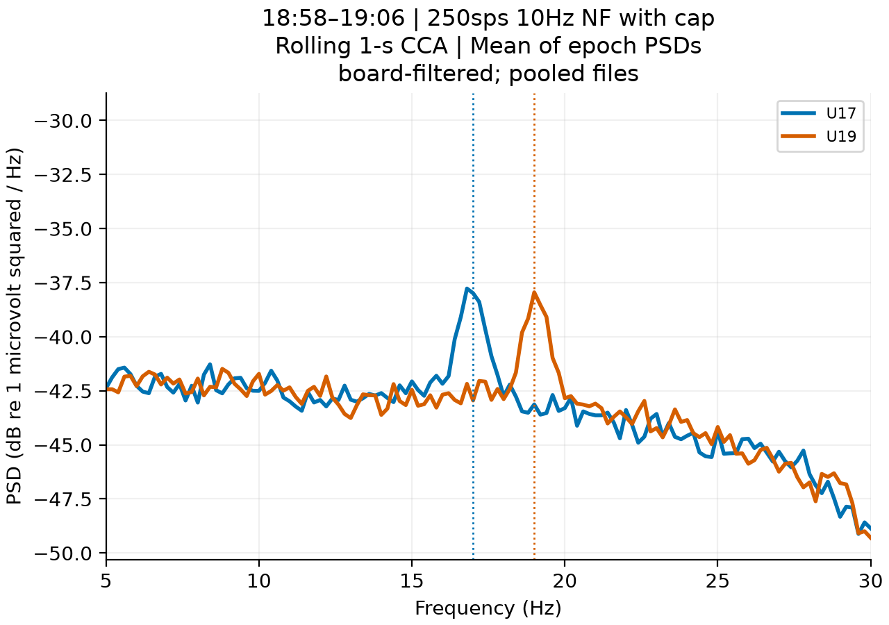
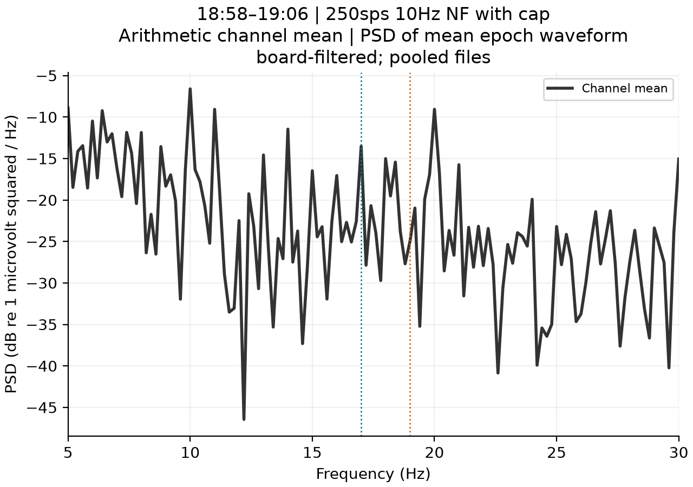
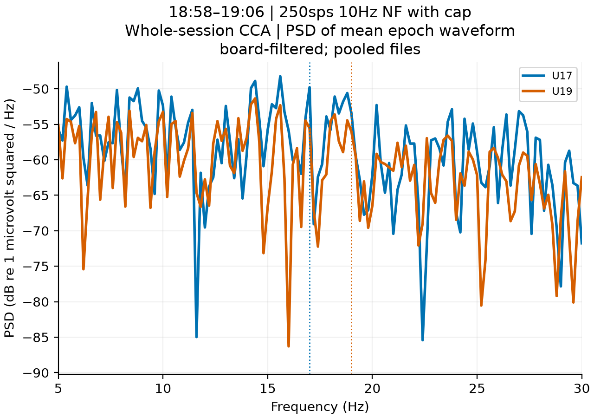
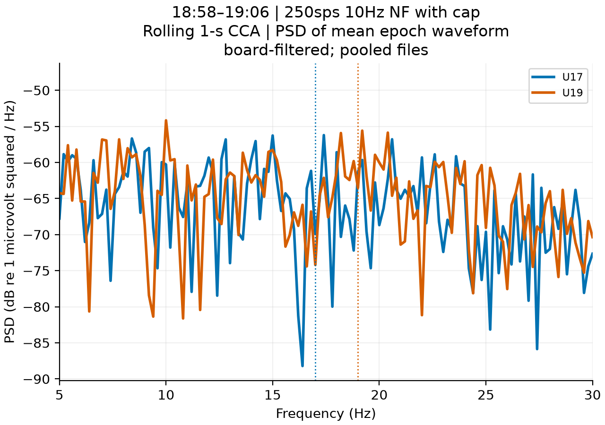

Three files, one analysis group. Three sequence gaps total 6,652 missing samples. No gap is interpolated or included in a rolling CCA fit or FFT. C9–C16 were recorded; C17–C24 were not. Five-second epochs, DPSS NW=1/K=1. Three observed samples in an isolated fragment are omitted from PSD only.
| file | start_time | end_time | metadata_samples | file_samples | count_difference | first_seq | last_seq | internal_gap_events |
|---|---|---|---|---|---|---|---|---|
| eeg_20261102_185800 | 2026-11-02 18:58:00 | 2026-11-02 18:58:42 | 4298 | 4296 | -2 | 85274 | 95730 | 1 |
| eeg_20261102_185842 | 2026-11-02 18:58:42 | 2026-11-02 19:00:07 | 20767 | 20767 | 0 | 95733 | 116988 | 1 |
| eeg_20261102_190007 | 2026-11-02 19:00:07 | 2026-11-02 19:06:47 | 99154 | 99154 | 0 | 116989 | 216142 | 0 |
| after_seq | before_seq | missing_samples | missing_seconds |
|---|---|---|---|
| 89566 | 95728 | 6161 | 24.644 |
| 95730 | 95733 | 2 | 0.008 |
| 116498 | 116988 | 489 | 1.956 |

Three files pooled as one analysis session. 3 sequence gaps; 3 short-fragment samples omitted from PSD only. 98 complete + 3 partial epochs. DPSS NW=1/K=1; 0.2 Hz FFT grid. Dotted blue/orange: 17/19 Hz analysis targets.
SVG| Channel mean | Whole-session CCA | Rolling CCA |
|---|---|---|
 board-filtered; pooled files; channels: C9, C10, C11, C12, C13, C14, C15, C16. Mean of selected channels before epoching. PSD per epoch, then equal epoch mean in linear power. 98 complete + 3 partial 5-s epochs; 124214 spectral samples from 124217 observed; 3 short-fragment samples excluded from PSD. DPSS NW=1/K=1; 0.2 Hz FFT grid. 17/19 Hz are inherited targets, not verified stimuli. SVG |  board-filtered; pooled files; channels: C9, C10, C11, C12, C13, C14, C15, C16. Independent target weights fitted once using the whole session. PSD per epoch, then equal epoch mean in linear power. 98 complete + 3 partial 5-s epochs; 124214 spectral samples from 124217 observed; 3 short-fragment samples excluded from PSD. DPSS NW=1/K=1; 0.2 Hz FFT grid. 17/19 Hz are inherited targets, not verified stimuli. SVG |  board-filtered; pooled files; channels: C9, C10, C11, C12, C13, C14, C15, C16. Latest 1-s windows; logged endpoints within uninterrupted spans; offline boundary fits; short span unassigned. First window back-projected; offline analysis. PSD per epoch, then equal epoch mean in linear power. 98 complete + 3 partial 5-s epochs; 124214 spectral samples from 124217 observed; 3 short-fragment samples excluded from PSD. DPSS NW=1/K=1; 0.2 Hz FFT grid. 17/19 Hz are inherited targets, not verified stimuli. SVG |
 board-filtered; pooled files; channels: C9, C10, C11, C12, C13, C14, C15, C16. Mean of selected channels before epoching. NaN-aware mean epoch waveform, then PSD. No event alignment. 98 complete + 3 partial 5-s epochs; 124214 spectral samples from 124217 observed; 3 short-fragment samples excluded from PSD. DPSS NW=1/K=1; 0.2 Hz FFT grid. 17/19 Hz are inherited targets, not verified stimuli. SVG |  board-filtered; pooled files; channels: C9, C10, C11, C12, C13, C14, C15, C16. Independent target weights fitted once using the whole session. NaN-aware mean epoch waveform, then PSD. No event alignment. 98 complete + 3 partial 5-s epochs; 124214 spectral samples from 124217 observed; 3 short-fragment samples excluded from PSD. DPSS NW=1/K=1; 0.2 Hz FFT grid. 17/19 Hz are inherited targets, not verified stimuli. SVG |  board-filtered; pooled files; channels: C9, C10, C11, C12, C13, C14, C15, C16. Latest 1-s windows; logged endpoints within uninterrupted spans; offline boundary fits; short span unassigned. First window back-projected; offline analysis. NaN-aware mean epoch waveform, then PSD. No event alignment. 98 complete + 3 partial 5-s epochs; 124214 spectral samples from 124217 observed; 3 short-fragment samples excluded from PSD. DPSS NW=1/K=1; 0.2 Hz FFT grid. 17/19 Hz are inherited targets, not verified stimuli. SVG |